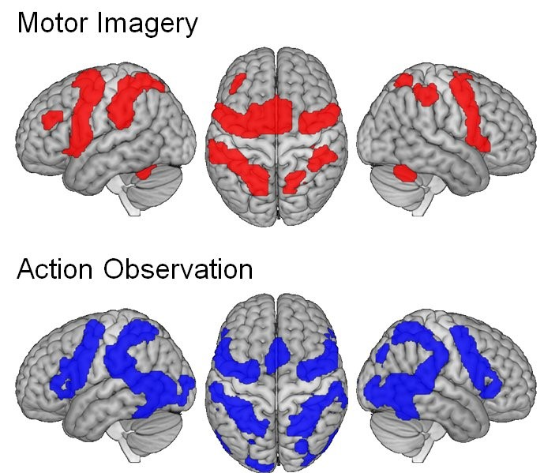
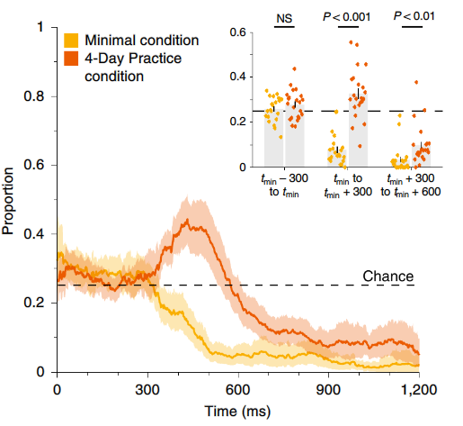

Research
The BAS lab investigates human movement control, motor learning, and neuroplasticity.

Motor Skill Learning
Understanding how the brain learns and improves new movement patterns is a question with both fundamental and clinical application. Our group has developed procedures to study motor learning over longer timescales than typical laboratory experiments. We have examined learning in stroke and older adult populations, while more fundamental research aims to develop approaches to enhance the learning process.

Motor Imagery & Action Observation
“Motor Stimulation Theory" suggest imagining an action, or observing another person perform an action, recruits the same brain areas used when physically performing that action. Our lab has conducted large-scale meta-analytic work on neuroimaging studies to compare the brain regions involved in action imagery, observation, and execution. Applied studies in this area have examined how observing the actions of others affects our own movements, and how the intention we observe an action with can affect the excitability of our own motor system.

Habit Formation
While studies in animals have been able to establish habits in the laboratory, this has been more difficult to achieve in humans. Our lab has developed an approach that allows us to unmask hidden habits by limiting the time that participants have to prepare a response.